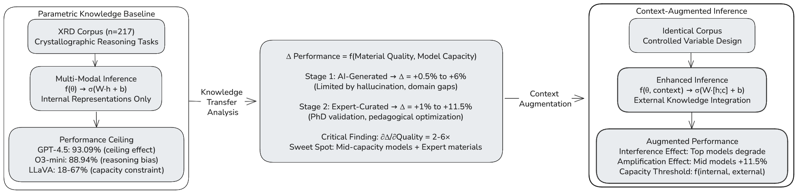

Mid-sized models get the biggest boost.
The clearest gains appear in models that have enough reasoning capacity to use extra context, but not enough domain knowledge to already saturate.
7B-70B models are the main beneficiaries.OpenXRD is a crystallography benchmark for researchers, students, and agents-for-science builders. It evaluates 74 language and multimodal models on 217 expert-curated X-ray diffraction questions spanning 81 subtasks, then measures how performance changes when models receive carefully written supporting passages.
Mid-sized models, especially in the 7B-70B range, benefit the most from expert-reviewed context. Frontier models often already know enough crystallography that extra passages create saturation or interference instead of improvement.
One accepted-paper figure anchors the page, but the story is in what happens when context quality and model capacity interact.

Every model sees the same benchmark questions. The difference is whether it answers from internal knowledge alone or with a curated supporting passage. That makes the benchmark useful for studying retrieval-style systems, scientific copilots, and agents that must decide whether added context is helping.
These are the results that make the benchmark useful beyond a single crystallography domain paper.
The clearest gains appear in models that have enough reasoning capacity to use extra context, but not enough domain knowledge to already saturate.
7B-70B models are the main beneficiaries.Several frontier systems lose accuracy when extra expert-reviewed passages repeat or reframe knowledge they already carry internally.
Interference is a real deployment risk.Expert-reviewed supporting materials outperform AI-generated alternatives even when the token budget is held constant, pointing to pedagogy and relevance rather than prompt length alone.
Matched tokens, different outcomes.When paired with strong support passages, a much smaller model can approach the performance of far larger systems at a fraction of the deployment cost.
LLaVA-v1.6-34B: 78.34% vs. Llama-3.1-405B: 84.33%.The accepted paper reports measurable drops for several frontier systems when expert-reviewed materials are added: not because the materials are wrong, but because redundant or stylistically mismatched context can disrupt an already strong internal representation.
OPENXRD does not cover a single trick question family. The benchmark spans fundamentals, geometry, structure analysis, scattering, phase reasoning, and mathematically demanding subtasks that still expose failure modes even in strong models.
81 distinct crystallography subtasks represented in the accepted benchmark.The page is meant to be readable for students entering the field and useful for researchers building scientific copilots.
OpenXRD makes it easy to compare confident scientific recall against genuinely brittle reasoning, especially on structural analysis and mathematically intensive tasks.
Because the benchmark fixes the supporting passage, it separates retrieval quality from a model's ability to assimilate scientific evidence during inference.
That matters when designing agents that search literature, summarize evidence, or decide whether to trust an added reference at all.
The repo stays usable, but it now sits below the research teaser rather than replacing it.
Clone the repo and bootstrap the local environment. The installer prefers uv and falls back to standard venv plus pip when needed.
The public archive stays zipped. Extraction requires an explicit acknowledgment because the dataset is released for evaluation and benchmarking only.
Set an API key for OpenAI or OpenRouter, choose a model explicitly, and run a small sample.
If OpenXRD informs a paper, benchmark comparison, scientific agent evaluation, classroom use, or dataset-based analysis, cite the accepted Digital Discovery article rather than an older preprint-only reference.